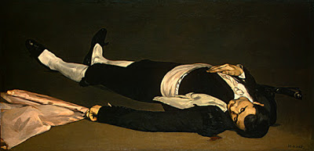

Bava Batra 20 - Damage Despite Precautions
A wall can separate from a ritual impurity of a corpse lying on the other side, but if there is an opening more than a hand-breadth, the impurity goes through. If, however, some object is put into the opening, making it smaller, the wall again separates from impurity. These objects can be growing grass, small scraps of fabric, flesh dangling from an animal, a bird, an idolater, salt, or a Torah scroll. But one is not allowed to plant grass near the wall ! - its root is far from the wall.
One is not allowed to set up an oven in a house unless there are 4 amot (6 feet) from it to the ceiling. If after observing all precautions listed , he damages the property of another, he must pay for the damage. Rabbi Shimon says, "The Sages stated all the precautions with their measurements to make him exempt."